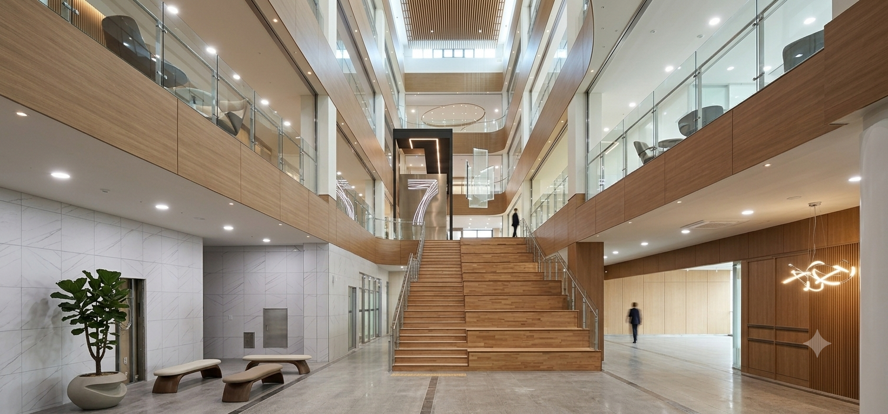

법적 보호 &
하자보수
법정 하자보수 점검·관리
분쟁 시 법적 안전장치
ABOUT IGONGAN SINCE 2015
주식회사 이공간은 공간의 본질을 살피고, 라이프스타일에 맞춘 고객 맞춤형 인테리어 솔루션을 제공합니다.
법인 실내건축공사업 면허와 여성기업 인증을 갖춘 이공간은 고객님의 소중한 자금을 투명하게 관리하고, 약속한 결과를 끝까지 책임집니다.

SECURITY & PROFESSIONALISM
법인 면허를 바탕으로 공정과 비용을 투명하게 안내하고, 시공 이후까지 세심하게 살핍니다.
법정 하자보수 점검·관리
분쟁 시 법적 안전장치
관련 법규를 고려한 공정
인허가·안전 절차 확인
전문 기술자의 시공 참여
현장 안전과 품질 관리
상세 산출 내역 안내
추가 비용 발생을 사전 협의
시공 후 필요한 관리 안내
지속적인 사후 상담
사용자 중심의 효율적인 동선과 실용적인 맞춤형 공간으로 매일이 편리한 공간을 연출합니다.
눈에 보이지 않는 공정까지 살피고 섬세한 마감으로 공간의 완성도를 높입니다.
검증된 자재와 탄탄한 기초 시공으로 시간이 지나도 오래 쓰일 공간을 지향합니다.
공간의 가치를 높이는
인테리어 파트너